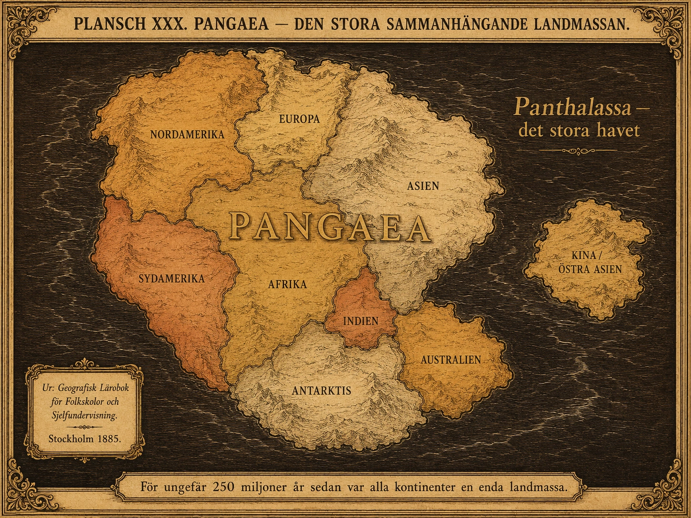
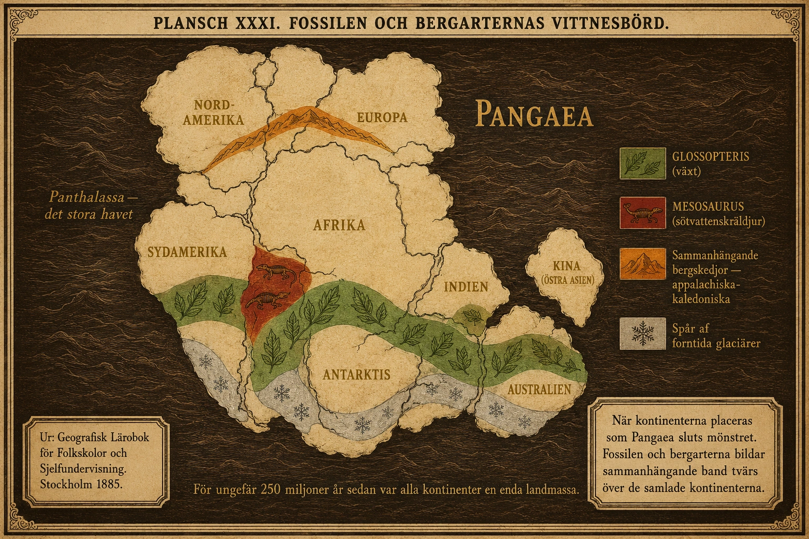
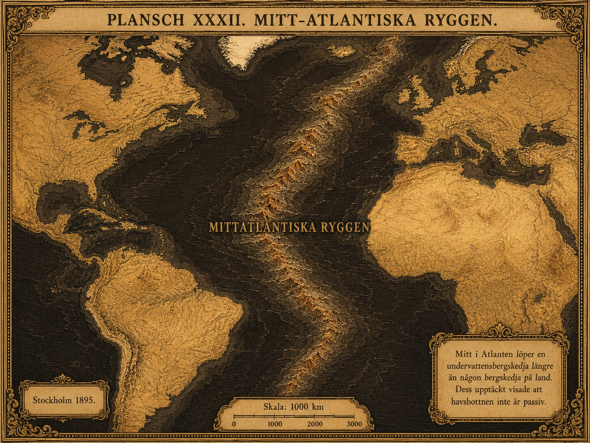
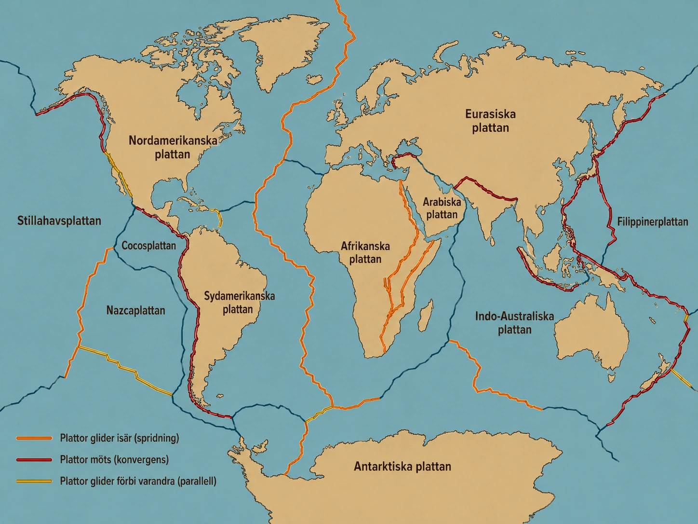
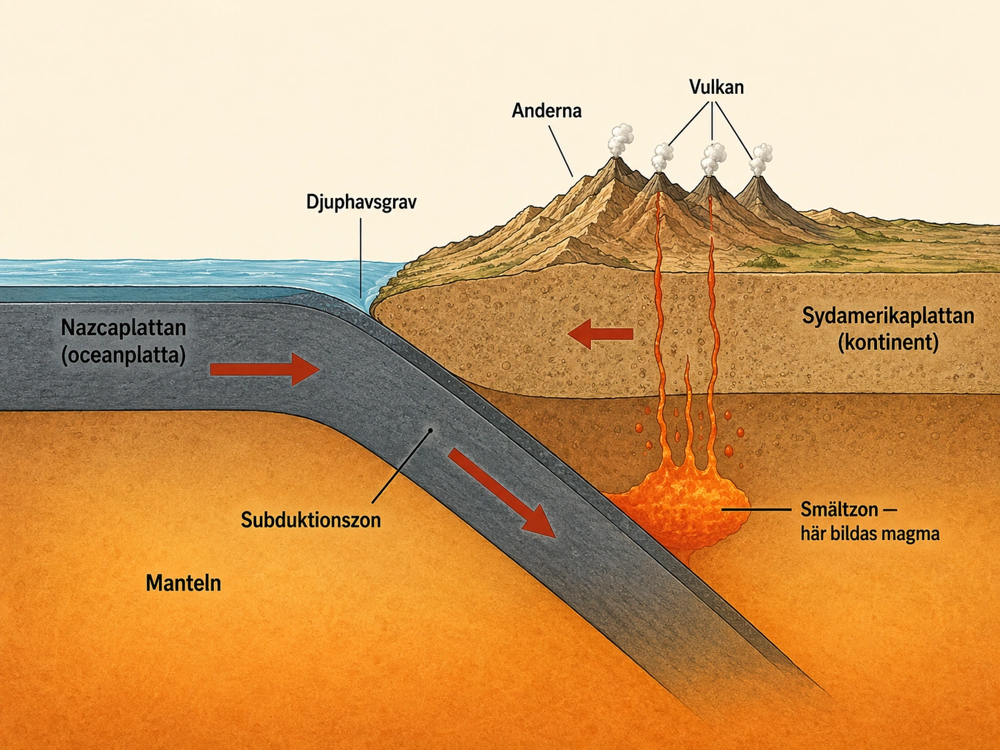
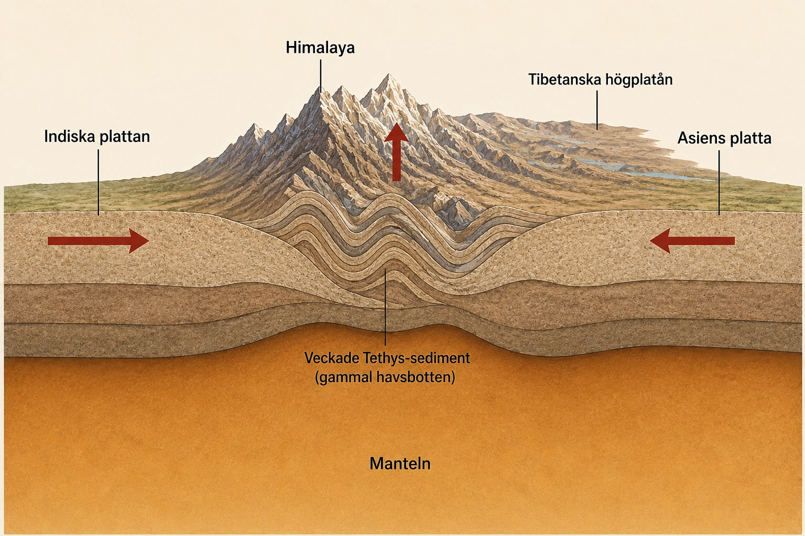
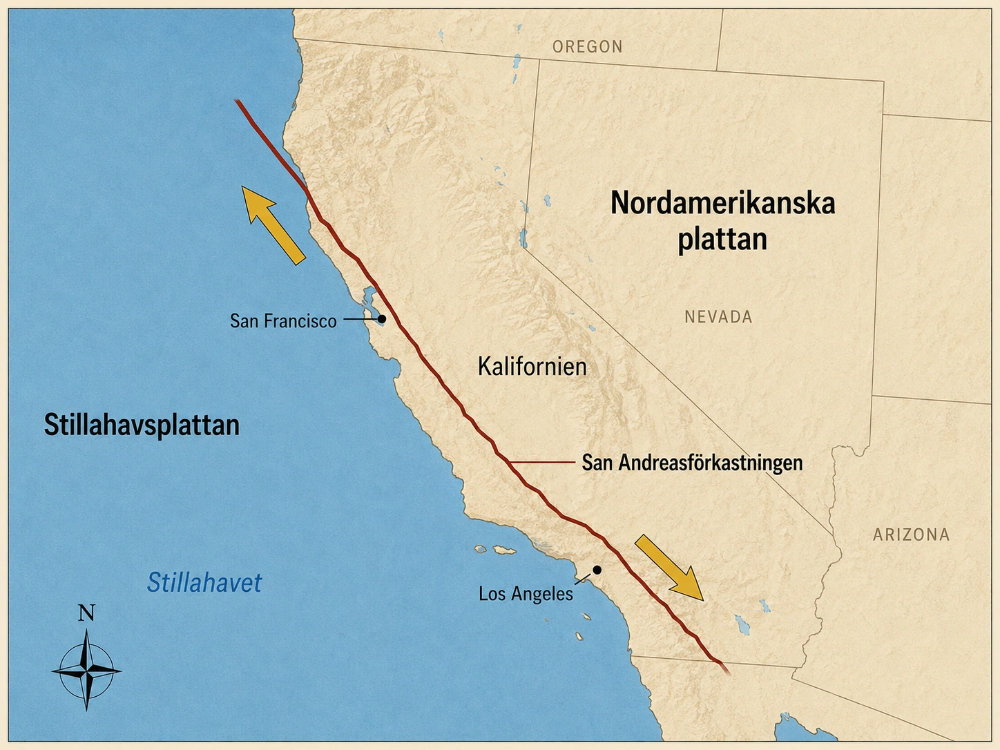
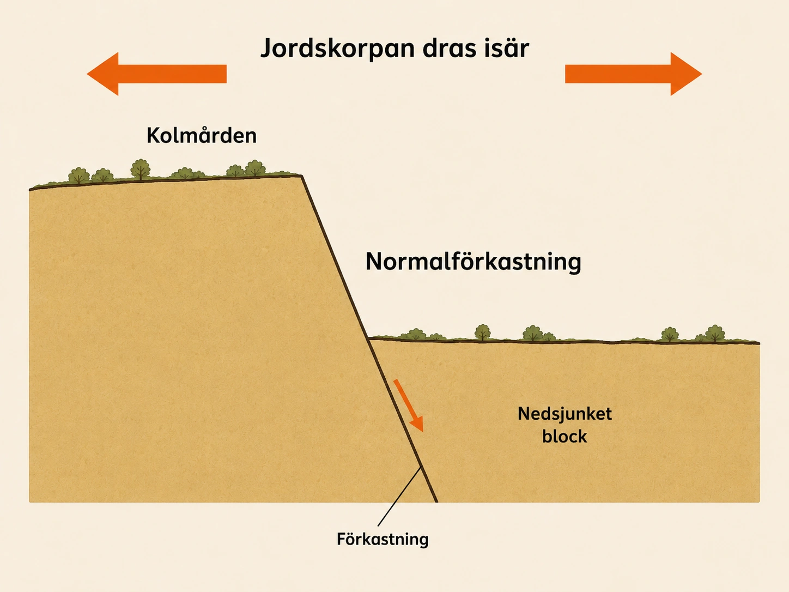
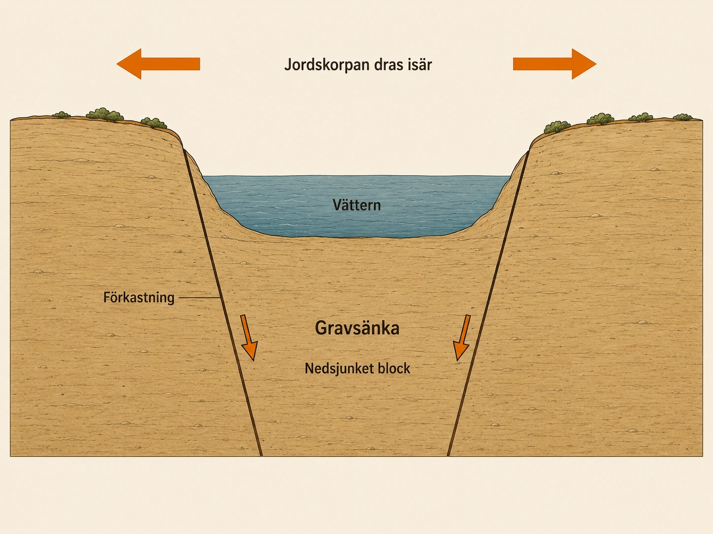
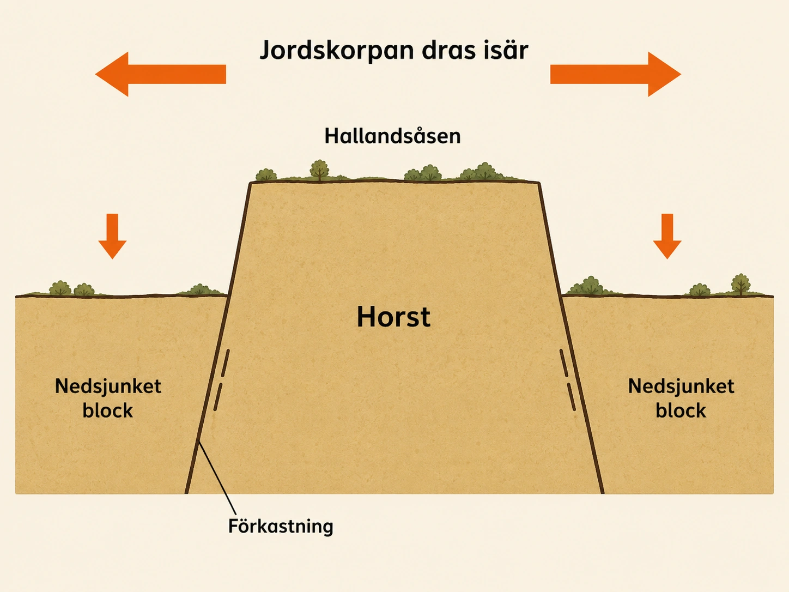

Plattektonik
— Wegener hade rätt — så här fungerar det —
En idé som var hundra år före sin tid
I dag vet vi att jordens kontinenter inte alltid har legat där de ligger nu. Det är en av geologins mest grundläggande sanningar. Men för bara drygt hundra år sedan var detta en uppfattning som mycket få forskare delade. De flesta trodde att kontinenterna hade legat fast där de var sedan jordens början. Bergskedjor kunde resa sig, hav kunde stiga och sjunka, men själva kontinenterna ansågs vara orubbliga.
En man hade en annan idé. Han hette Alfred Wegener, och hans teori om kontinentaldrift mottogs med skratt och hånfull kritik under hans livstid. Först långt efter hans död fick han rätt. Den här historien handlar om både hans idé och om hur bevisen slutligen kom — pusselbit för pusselbit — under hela 1900-talet.
Vem var Alfred Wegener?
Alfred Wegener föddes i Tyskland 1880. Han var inte geolog från början. Han utbildade sig i astronomi och meteorologi — alltså läran om väder och klimat. Det här är viktigt: Wegener kom inte inifrån geologin utan från ett angränsande fält. Han var van att tänka stort, om luftmassor och vädersystem som omfattade hela jordklotet.
Han ledde också flera expeditioner till Grönland, där han studerade is, klimat och atmosfär. Han var en forskare som inte räddes hårda miljöer eller stora frågor. Men just det att han inte tillhörde den innersta kretsen av geologer kom att bli ett problem. När han senare började uttala sig om jordens historia hade många geologer svårt att ta honom på allvar. "Vad vet en meteorolog om bergarter?" var inställningen.
Wegeners idé — kontinenterna har flyttat sig
Wegener lade fram sin teori i början av 1900-talet. Kärnan var enkel men radikal: kontinenterna har långsamt rört sig över jordens yta under miljontals år. De ligger inte där de alltid har legat.
Han tänkte sig att kontinenterna en gång hade suttit ihop i en enda enorm landmassa. Denna superkontinent kallade han Pangaea, ett ord som betyder ungefär "hela jorden" eller "allt land". Pangaea började senare spricka upp. Bitarna gled isär, och under loppet av hundratals miljoner år tog de sina platser där vi ser kontinenterna i dag.
Wegener pekade på något som alla kunde se. Tittar man på en världskarta liknar Sydamerikas östkust och Afrikas västkust två pusselbitar som skulle kunna passa ihop. Det är inte en perfekt passform vid dagens kustlinjer — havsnivåer, erosion och flodmynningar har ändrat dem — men formen är ändå slående. Wegener menade att det inte kunde vara en slump. Sydamerika och Afrika hade en gång suttit ihop.
Han pekade också på andra likheter mellan kontinenter som idag ligger åtskilda av tusentals kilometer hav. Vissa bergarter, fossil och spår av gamla klimat verkade hänga ihop på ett sätt som var svårt att förklara om kontinenterna alltid hade legat där de ligger nu.

Varför mötte han så hårt motstånd?
Wegeners största problem var inte själva idén att kontinenterna hade rört sig. Det fanns gott om observationer som pekade åt det hållet. Hans problem var ett annat: han kunde inte förklara hur de hade rört sig. Vilken kraft hade flyttat enorma landmassor över jordklotet?
Hans förslag — att kontinenterna på något sätt hade plöjt sig fram genom havsbottnens berggrund — fungerade inte. Andra geologer protesterade. Berggrund är hård. En kontinent kan inte glida genom den som en isbrytare genom packis. Och om det inte gick att förklara hur rörelsen hade skett, hur skulle man då kunna tro på den?
Kritiken blev hård. Många avfärdade hela teorin som fantasifullt nonsens. Andra hittade alternativa förklaringar för de likheter Wegener hade pekat på. En populär idé var att det tidigare hade funnits landbryggor mellan kontinenterna — smala landområden som band ihop dem — och att dessa senare hade sjunkit ner i havet och försvunnit. På det sättet kunde djur och växter ha vandrat mellan kontinenterna utan att kontinenterna själva hade behövt röra sig.
Wegener tyckte att sådana förklaringar blev mer och mer krångliga ju fler likheter man hittade. Det enklaste sättet att förklara mönstret, menade han, var att kontinenterna faktiskt en gång hade suttit ihop. Men hans kritiker tyckte att hans idé var för djärv och att den saknade mekanism. Han fick aldrig under sin livstid uppleva att teorin skulle få stöd.
Alfred Wegener dog 1930, mitt under en av sina Grönlandsexpeditioner. Han var då 50 år. Hans teori var fortfarande omstridd och de flesta geologer trodde inte på den.
Bevisen växer — sex pusselbitar
Under decennierna efter Wegeners död hände något. Bit för bit började bevisen tippa hans väg. Nya forskningstekniker, bättre mätinstrument och systematiska undersökningar av platser ingen tidigare hade studerat ledde till en växande mängd observationer som alla pekade åt samma håll. Det viktiga var inte att ett enda bevis var hundra procent övertygande — det viktiga var att så många olika typer av bevis pekade åt samma håll.
1. Kontinenterna passar ihop bättre än man kunnat tro
När forskare under 1900-talet började kartlägga kontinentalsocklarna — kontinenternas riktiga kanter under havsytan — visade det sig att kontinenterna passar ihop ännu bättre där än vid dagens strandlinje. Pusselformen Wegener pekat på var alltså inte en optisk illusion vid kustlinjen. Den fanns i kontinenternas verkliga geologiska kontur.
2. Fossil på rätt sida av fel hav
Ett av de starkaste bevisen kom från fossil. Forskare hittade fossil av samma arter på kontinenter som idag ligger åtskilda av enorma hav. Det mest kända exemplet är Mesosaurus — en liten kräldjurart som levde i sötvatten. Fossil av Mesosaurus har hittats både i Sydamerika och i södra Afrika. Det är svårt att tänka sig att ett sötvattensdjur skulle ha simmat över hela Atlanten. Den enklaste förklaringen är att Sydamerika och Afrika en gång satt ihop.
Ett annat exempel är växten Glossopteris. Dess fossil har hittats i Sydamerika, Afrika, Indien, Australien och Antarktis. Idag ligger dessa fem platser otroligt långt ifrån varandra. Men om de en gång satt ihop som en sammanhängande sydlig landmassa blir spridningen genast logisk.
3. Bergarter och bergskedjor som plötsligt slutar
Geologer upptäckte också att vissa bergskedjor verkade fortsätta från en kontinent till en annan trots att det idag finns ett helt hav emellan. Bergarter i östra Nordamerika visade slående likheter med bergarter i västra Europa — samma ålder, samma typ, samma struktur. Det var som om en gammal bergskedja hade brutits itu när Atlanten öppnade sig.
Berggrunden bär alltså spår av sin egen historia. Och den historien stämmer med Wegeners idé: dessa områden hade en gång varit delar av samma större landmassa.

4. Glaciärspår i tropikerna
Ett av de mest överraskande bevisen kom från spår av forntida istider. Forskare hittade tydliga märken efter glaciärer i områden som idag ligger i varma delar av världen — södra Afrika, Indien, Sydamerika och Australien. Spåren var ungefär samma ålder. Hur kunde tropiska områden ha varit täckta av is?
Om dessa platser låg där de ligger idag är det praktiskt taget omöjligt. Men om de en gång satt ihop nära sydpolen — som en sammanhängande sydlig landmassa — blir glaciärspåren begripliga. De är inte spår av en omöjlig tropisk istid, utan av en tid då dessa landmassor hade ett helt annat läge på jordklotet.
5. Havsbottnen visar sig vara en värld i sig
Fram till mitten av 1900-talet visste forskare ganska lite om hur havsbottnarna faktiskt såg ut. Man tänkte sig dem som ganska platta och stilla. Men när ekolod och andra mätmetoder blev tillgängliga upptäckte forskare att havsbottnen var allt annat än enformig. Den hade enorma bergskedjor, djupa dalar och långa sprickzoner.
Mitt i Atlanten hittade man en gigantisk undervattensbergskedja: Mittatlantiska ryggen. Den löper hela vägen från norr till söder och är längre än vilken bergskedja på land som helst. Att havsbottnen hade sådana strukturer betydde att den inte var en passiv yta som kontinenterna gled över. Något hände i havsbottnen. Vad, det skulle dröja ytterligare ett tag innan man förstod.

6. Det magnetiska minnet i sten
Det kanske avgörande beviset kom från magnetism. När lava stelnar och blir bergart riktar sig små magnetiska mineral i stenen efter jordens magnetfält i ögonblicket då stelnandet sker. Bergarten bär alltså med sig ett magnetiskt minne — den vet hur magnetfältet pekade när den bildades.
När forskare mätte detta magnetiska minne i bergarter från olika kontinenter visade resultaten något häpnadsväckande. Kontinenterna måste ha haft helt andra lägen tidigare. De magnetiska minnena pekade åt olika håll på ett sätt som bara gick att förklara om kontinenterna själva hade flyttat sig under den tid bergarterna var nya.
Detta var inte längre en jämförelse av kustlinjer eller fossil. Det var en mätbar, fysikalisk signal som visade att kontinenterna hade rört sig. Här tippade vågen slutligen över.
Wegeners betydelse
När alla dessa bevis vägdes ihop under 1950- och 60-talet var slutsatsen oundviklig: Wegener hade haft rätt i sin huvudtanke. Kontinenterna har flyttat sig. Vad han däremot inte hade förstått var mekanismen. Den kom först när man insåg att det inte är kontinenterna som plöjer genom berggrund. Det är hela jordskorpan — uppdelad i plattor — som rör sig, driven av konvektionsströmmarna djupt i manteln. Det är vad vi kallar plattektonik, och det blir nästa avsnitt.
Wegener fick alltså rätt i sin idé men på ett sätt han själv inte kunde förklara. Hans största gåva till geologin var inte den exakta mekanismen, utan modet att se mönster ingen annan tog på allvar — och att hålla fast vid en idé som var långt före sin tid. Han dog som en utskrattad outsider. Idag står hans namn med i varje geologilärobok.
En idé som ingen ville tro på
I dag vet vi att jordens kontinenter inte alltid har legat där de ligger nu. För hundra år sedan var det en ovanlig tanke. De flesta forskare trodde att kontinenterna låg stilla. En forskare hade en annan idé. Han hette Alfred Wegener. Den här texten handlar om honom — och om hur hans idé till slut visade sig vara rätt.
Alfred Wegener
- Alfred Wegener var en tysk forskare
- Han föddes 1880 och dog 1930
- Han var inte geolog — han var meteorolog
- Hans teori kallas kontinentaldrift
Alfred Wegener föddes i Tyskland år 1880. Han var inte geolog. Han var astronom och meteorolog. Meteorologi är läran om väder och klimat.
Wegener åkte också på expeditioner till Grönland. Där studerade han is och klimat. Han var en forskare som vågade tänka stort.
Men eftersom Wegener inte var geolog hade andra geologer svårt att ta honom på allvar. När han började uttala sig om jordens historia tyckte många att han inte var rätt person att göra det.
Wegeners idé
- Wegener trodde att kontinenterna har rört sig
- Han kallade sin idé för kontinentaldrift
- Förr satt alla kontinenter ihop i en enda landmassa
- Den hette Pangaea
- Pangaea sprack upp och bitarna gled isär
Wegeners idé var enkel men ovanlig. Han trodde att kontinenterna har rört sig långsamt över jordens yta.
Han tänkte sig att alla kontinenter en gång satt ihop. De var en enda stor landmassa. Wegener kallade den för Pangaea. Det betyder ungefär "hela jorden".
Sedan sprack Pangaea upp. Bitarna gled isär. Långsamt, under miljontals år, blev de till de kontinenter vi har idag.
Wegener tittade på en världskarta. Han såg att Sydamerikas östkust och Afrikas västkust ser ut som två pusselbitar. Det kan inte vara en slump, tyckte han. De har en gång suttit ihop.
Bilden visar hur Wegener tänkte sig att jorden såg ut för 250 miljoner år sedan. Lägg märke till:
- Alla kontinenter sitter ihop i en enda landmassa
- Sydamerika och Afrika hänger ihop som pusselbitar
- Antarktis, Indien och Australien ligger nära varandra i söder
- Runt landmassan finns ett enda stort hav
Fundera: Hur ser dagens kontinenter ut jämfört med Pangaea?
Varför trodde ingen på honom?
- Wegener kunde inte förklara hur kontinenterna hade rört sig
- Det var hans största problem
- Han trodde att kontinenterna plöjde genom havsbottnen
- Andra forskare sa att det inte gick
- Många skrattade åt hans idé
Wegener hade ett stort problem. Han kunde inte förklara hur kontinenterna hade rört sig. Vad var det som hade flyttat dem?
Han trodde att kontinenterna hade plöjt sig fram genom havsbottnens berggrund. Men andra forskare sa nej. Berggrund är hård. En kontinent kan inte glida genom den.
Eftersom Wegener inte kunde förklara mekanismen, trodde de flesta inte på honom. Många skrattade åt hans idé. Andra sa att en meteorolog inte borde uttala sig om geologi.
Alfred Wegener dog år 1930 på en expedition till Grönland. Han var bara 50 år. Han fick aldrig uppleva att hans idé skulle visa sig vara rätt.
Bevisen växer fram
Efter Wegeners död började fler och fler bevis dyka upp. Bit för bit pekade alla åt samma håll. Här är de sex viktigaste bevisen.
1. Kontinenterna passar ihop
- Sydamerika och Afrika ser ut att passa ihop
- Det syns ännu bättre under havet
- Kontinenterna har en gång suttit ihop
Det första beviset är det enklaste. Tittar man på en världskarta ser Sydamerika och Afrika ut som två pusselbitar. Det är inte en slump.
När forskare började mäta kontinenternas riktiga kanter under havet, blev pusslet ännu tydligare. Kontinenterna passar ihop nästan perfekt om man tittar djupare ner.
2. Fossil på fel platser
- Fossil är spår av djur och växter som levde för länge sedan
- Samma fossil hittas på olika kontinenter
- Det är konstigt om kontinenterna alltid har legat där de ligger nu
Fossil är spår av djur och växter som levde för länge sedan. Forskare hittade fossil av samma djur på kontinenter som idag ligger långt ifrån varandra.
Ett exempel är Mesosaurus. Det var ett litet kräldjur som levde i sötvatten. Fossil av Mesosaurus finns både i Sydamerika och i Afrika. Men ett sötvattensdjur kan inte simma över Atlanten. Den enda förklaringen är att Sydamerika och Afrika en gång satt ihop.
Ett annat exempel är växten Glossopteris. Fossil av den finns i Sydamerika, Afrika, Indien, Australien och Antarktis. Idag ligger dessa fem platser långt ifrån varandra. Men de har en gång hängt ihop.
Bilden visar dagens kontinenter sammansatta som Pangaea. Färgade band visar var samma fossil hittas. Lägg märke till:
- Det gröna bandet visar var Glossopteris-fossil hittas — alla fem platser hänger ihop när kontinenterna sätts samman
- Det röda området visar var Mesosaurus levde — i en sammanhängande sötvattensregion mellan dagens Afrika och Sydamerika
- Bergarter matchar mellan östra Nordamerika och västra Europa
Fundera: Vad skulle fossilmönstret se ut som om Wegener hade haft fel?
3. Bergskedjor som slutar tvärt
Geologer upptäckte att vissa bergskedjor verkade fortsätta från en kontinent till en annan. Som om de hade varit ihop förut men sedan brutits itu.
Ett exempel är bergarter i östra Nordamerika och västra Europa. De är väldigt lika. Samma ålder, samma typ. Det är som om en gammal bergskedja hade delats när Atlanten öppnade sig.
4. Spår av glaciärer i tropikerna
Forskare hittade spår av gamla istider på platser som idag är varma. I södra Afrika, i Indien, i Sydamerika, i Australien. Hur kan det ha funnits is i varma områden?
Svaret är att dessa platser inte alltid har legat där de ligger idag. En gång låg de tillsammans nära sydpolen. Då var glaciärerna helt naturliga.
5. Havsbottnen har stora bergskedjor
Förr trodde forskare att havsbottnen var ganska platt och stilla. Sedan började de mäta. De upptäckte att havsbottnen är full av stora bergskedjor och djupa dalar.
Mitt i Atlanten finns en enorm undervattensbergskedja som heter Mittatlantiska ryggen. Det visade att havsbottnen inte var en stilla yta. Något hände där nere.
Bilden visar Atlanten ovanifrån. Lägg märke till:
- I mitten löper Mittatlantiska ryggen — en bergskedja under havet
- Den sträcker sig från norr till söder genom hela Atlanten
- På båda sidor blir havet djupare — det är två stora djuphav
- Ryggen visade att havsbottnen inte var stilla
Fundera: Vad kan det betyda att det finns en bergskedja mitt i havet?
6. Bergarter har magnetiska minnen
När lava stelnar och blir bergart riktar sig små magnetiska mineral i stenen efter jordens magnetfält. Bergarten "kommer ihåg" hur magnetfältet pekade då.
När forskare mätte detta magnetiska minne i bergarter från olika kontinenter, visade det att kontinenterna måste ha haft andra lägen tidigare. De har flyttat sig.
Detta var det avgörande beviset. Nu kunde ingen längre tvivla.
Wegeners betydelse
När alla bevis lades samman under 1950- och 60-talet stod det klart: Wegener hade haft rätt. Kontinenterna har flyttat sig.
Han hade inte hela förklaringen. Han visste inte exakt hur kontinenterna rörde sig. Det skulle förklaras senare, med teorin om plattektonik. Vi går igenom den i nästa avsnitt.
Men Wegener vågade tänka annorlunda. Han såg ett mönster som ingen annan tog på allvar. Och till slut visade det sig att han hade rätt.
Pangaea var inte den första — superkontinenternas cykel
När Wegener föreslog att Pangaea hade brutits sönder och spridits ut till dagens kontinenter, var det redan en radikal tanke. Men den moderna geologin har fört idén ännu längre. Pangaea var inte bara en superkontinent — det var bara den senaste.
Genom att studera magnetiska data i bergarter, fossiler och spår av forntida bergskedjor har geologer kartlagt en cyklisk historia. Ungefär var fjärde till femte hundra miljoner år verkar jordens kontinenter samlas till en enda stor landmassa och sedan sprängas isär igen. Pangaea bildades för ungefär 335 miljoner år sedan och började brytas upp för cirka 175 miljoner år sedan. Innan Pangaea fanns Rodinia, som existerade för ungefär en miljard år sedan och bröts upp för cirka 750 miljoner år sedan. Innan Rodinia fanns Columbia (även kallad Nuna), för cirka 1,8 miljarder år sedan.
Mönstret kallas superkontinentcykeln. Och om mönstret håller bör nästa superkontinent bildas om ungefär 200 till 300 miljoner år. Geologer har döpt sina förslag — Pangaea Ultima, Amasia, Aurica — beroende på vilken modell de tror på. I en modell krockar Afrika och Eurasien medan Amerika kröker runt och ansluter från andra hållet. I en annan samlas allt land kring nordpolen. Inget av detta kommer någon nu levande att uppleva, men för planeten är det inom räckhåll.
Det fascinerande är att även denna djupa rytm — kontinenter som mals samman och slits isär över hundratals miljoner år — i grunden drivs av konvektionsströmmarna i manteln vi mötte i avsnitt 1. Hela jordens geologiska berättelse är, när allt kommer omkring, värme som söker sig uppåt och kallnar materia som söker sig nedåt. Det är konvektion i ett tempo som är svindlande för en människa men ändå brådskande för planeten.
Beviset Wegener aldrig fick se
Wegener dog 1930 utan att veta vilken kraft som hade rört kontinenterna. Trettio år senare lade två brittiska geologer, Fred Vine och Drummond Matthews, fram upptäckten som hade övertygat honom om han hade fått leva.
De studerade magnetiska mätningar från havsbottnen kring Mittatlantiska ryggen — den långa undervattensbergskedjan i Atlanten. Det de hittade var något helt oväntat: bergarterna på havsbottnen var ordnade i symmetriska magnetiska remsor. Längs ryggen i mitten fanns en remsa där bergarten hade en viss magnetisk riktning. Bredvid den, parallellt, en remsa där riktningen var omvänd. Sedan en ny remsa med rätt riktning. Och så vidare, ut åt båda hållen från ryggen, som ett spegelvänt streckmönster.
Vad betydde det? Förklaringen var dramatisk. Mitt i Mittatlantiska ryggen pressas hela tiden ny lava upp ur jordens inre. När lavan stelnar bevarar den magnetfältets riktning i det ögonblick den stelnade. Sedan trycker ny lava upp i mitten, och den gamla bergarten skjuts åt sidan — bort från ryggen, åt båda hållen samtidigt. Det blir alltså som ett gigantiskt transportband: ny havsbotten skapas i mitten och äldre havsbotten skjuts åt sidan.
Det förklarade också remsmönstret. Eftersom jordens magnetfält ibland byter riktning (det går vi in på i djupdykningen om polskiften), kommer olika åldrar av havsbotten ha bevarat olika magnetiska riktningar. Remsorna är jordens magnetiska historia, nedskriven i den havsbotten som vuxit fram år för år.
Upptäckten kom 1963. Den blev startskottet för det vi nu kallar plattektonik. Wegener hade rätt — kontinenterna rör sig. Men de plöjer inte genom havsbotten. Havsbotten själv är levande, växande, skjutande. Plattorna rider på den. Det är detta som driver hela jordens yta.
Tre decennier efter Wegeners död fick han slutligen sitt svar på den fråga som hade plågat honom — hur. Men då var han borta. Geologin tackade honom genom att göra hans namn synonymt med en av vetenskapshistoriens mest spektakulära upprättelser.
Wegener hade rätt — men varför?
När bevisen tippat över på Wegeners sida — fossil, bergarter, magnetiska remsor — återstod hans gamla problem. Kontinenterna hade flyttat sig, det var nu klart. Men hur? Vilken kraft var det som rörde dem? Wegeners eget förslag att kontinenterna plöjde fram genom havsbottnen hade aldrig fungerat, och utan en mekanism hade hans idé hängt i luften.
Svaret växte fram under 1950- och 60-talet, decennier efter hans död. Det fick namnet plattektonik. Det är den teori vi använder än i dag för att förklara nästan allt som händer på jordens yta — bergskedjor, vulkaner, jordbävningar, havsbottenrörelser, hela det stora geologiska maskineriet.
Jordens yta är uppdelad i plattor
Plattektonik bygger på en enkel grundtanke. Jordens yttersta skal är inte en hel och sammanhängande yta. Det är uppdelat i ett antal bitar — stora och små, krökta och kantiga, vissa lika stora som hela kontinenter, andra inte mycket större än ett landskap. Dessa bitar kallas litosfärplattor eller bara plattor.
En platta består av jordskorpan plus den översta, hårda delen av manteln. Tillsammans bildar de ett relativt styvt skikt — litosfären — som glider ovanpå den varma, något mjukare manteln under. Det är hela detta paket som rör sig, inte bara jordskorpan.
Rörelsen är långsam. Plattorna flyttar sig några centimeter per år — ungefär lika snabbt som dina naglar växer. Det är ingenting i mänsklig tidsskala. Men över miljontals år blir det enorma avstånd. På den tid som har gått sedan dinosaurierna dog ut har plattorna förflyttat sig hundratals till tusentals kilometer.

Varför rör sig plattorna?
Drivkraften kommer från värmen i jordens inre. Den värmen är delvis kvar från jordens bildning för 4,5 miljarder år sedan, men den kommer också från radioaktiva ämnen som långsamt sönderfaller i jordens inre och hela tiden frigör värme.
Denna värme sätter manteln i rörelse. Manteln är fast berg, men den är så varm och har så lång tid på sig att den ändå kan flyta — extremt långsamt, som tjock sirap. Varmt mantelmaterial stiger uppåt, kallnar nära ytan, och sjunker sedan ned igen. Det är de konvektionsströmmar vi mötte i avsnitt 1.
Konvektionsströmmarna drar med sig plattorna på jordens yta. Det är som om plattorna red på ett extremt långsamt transportband. Var de befinner sig på bandet — om de står ovanpå en uppåtgående eller nedåtgående ström — avgör om de pressas mot eller drar sig bort från andra plattor.
Det är alltså inte kontinenterna som glider runt på egen hand. Det är hela plattor — kontinenter, havsbotten och allt — som rör sig som enheter. Kontinenterna ligger förankrade ovanpå och följer bara med.
Tre typer av plattgränser
Det är vid plattornas kanter det dramatiska sker. När plattor möts uppstår enorma krafter, och resultatet blir bergskedjor, jordbävningar, vulkaner och djuphavsgravar. Plattornas kanter kallas plattgränser, och det finns tre huvudtyper:
- Spridningszoner — plattorna glider isär. Ny havsbotten bildas i sprickan mellan dem.
- Kollisionszoner — plattorna pressas mot varandra. En kan tryckas ner under en annan (subduktion), eller så pressas två kontinenter ihop.
- Parallellzoner — plattorna glider förbi varandra i sidled. Här uppstår ofta jordbävningar men sällan vulkaner.
Det är ingen slump att Stilla havet kantas av en ring av vulkaner, eller att Japans öar regelbundet skakas av jordbävningar. Det är hela tiden plattgränser som ger sig till känna. Kollisionszoner och parallellzoner går vi igenom i nästa avsnitt. Här tittar vi närmare på den enklaste av de tre — spridningszonen.
Mittatlantiska ryggen — en spricka mitt i havet
Det tydligaste exemplet på en spridningszon ligger mitt under Atlanten. Där sträcker sig Mittatlantiska ryggen — en lång undervattensbergskedja som löper från norr till söder genom nästan hela havet, från ovanför Island ner mot Antarktis.
Längs ryggen rör sig plattorna långsamt bort från varandra. Den nordamerikanska och eurasiska plattan drar sig isär i norr. Den sydamerikanska och den afrikanska plattan drar sig isär i söder. I sprickan mellan dem stiger magma upp från manteln. När magman möter det kalla havsvattnet stelnar den till ny berggrund — ny havsbotten.
Det betyder att Atlanten långsamt blir bredare. Europa och Nordamerika rör sig ifrån varandra med ungefär två till fyra centimeter per år. Ingen människa märker det i sin vardag, men på jordens tidsskala är det dramatiskt: Atlanten existerade inte alls för 200 miljoner år sedan. Då satt Nordamerika och Afrika ihop, och allt det som idag är Atlanten har vuxit fram sedan dess, ryggens spricka centimeter för centimeter.
Island — där spridningen syns ovanför havet
På de flesta platser ligger Mittatlantiska ryggen djupt nere på havsbottnen, två till tre kilometer under ytan. Men på ett enda ställe stiger ryggen upp över havet och blir synlig. Den platsen heter Island.
Island ligger alltså direkt på plattgränsen. Den nordamerikanska plattan ligger åt väster, den eurasiska åt öster, och precis mellan dem — tvärs över ön — löper sprickan där plattorna långsamt drar sig isär. På Island kan man bokstavligen gå ner i sprickan och se den med egna ögon. I nationalparken Þingvellir går en lång ravin tvärs genom landskapet, och den ravinen är gränsen mellan två kontinenter.
Det är därför Island har så mycket vulkanism, så många jordbävningar, så många heta källor. Landet byggs hela tiden upp av magma som tränger upp ur sprickan, samtidigt som plattorna drar sig isär. Islänningarna bor på en plats där jorden aktivt skapas under deras fötter.
Plattektoniken förklarar allt
Wegener hade rätt om att kontinenterna rör sig. Men det är inte kontinenterna ensamma — det är hela plattor, drivna av konvektionsströmmar djupt nere i manteln. Plattektoniken är en av vetenskapens stora samlande teorier. Den knyter ihop det vi ser på ytan — Atlantens växande bredd, Islands eldsprutande natur, Stilla havets ring av vulkaner — med det som händer djupt under jorden.
Vi har sett vad som händer när plattor drar sig isär. I nästa avsnitt tittar vi på det motsatta: vad händer när plattor istället krockar?
Wegener hade rätt — men varför?
Wegener visade att kontinenterna har rört sig. Men han kunde inte förklara hur det gick till. Det svaret kom långt efter hans död. Det kallas plattektonik.
Jordens yta är uppdelad i plattor
- Jordens yttersta skal är uppdelat i bitar
- Bitarna kallas plattor eller litosfärplattor
- Det finns ungefär tolv stora plattor och flera mindre
- Plattorna rör sig några centimeter per år
- Det är ungefär lika snabbt som dina naglar växer
Jordens yttersta skal är inte en hel yta. Det är uppdelat i bitar. Bitarna kallas plattor.
En platta består av jordskorpan och den översta delen av manteln. Plattorna glider ovanpå den varmare manteln under.
Plattorna rör sig långsamt. Bara några centimeter per år. Det är ungefär lika snabbt som dina naglar växer. Men under miljontals år blir det stora avstånd.
Bilden visar jordens stora plattor. Lägg märke till:
- Jorden är uppdelad i ungefär ett dussin stora plattor
- Det finns också flera mindre plattor
- Plattorna passar in i varandra som pusselbitar
- Pilar visar i vilken riktning varje platta rör sig
Fundera: Vilken platta ligger Sverige på?
Varför rör sig plattorna?
- Det är varmt djupt nere i jorden
- Värmen sätter manteln i rörelse
- Rörelsen kallas konvektion
- Konvektionen drar med sig plattorna ovanpå
Det är mycket varmt djupt nere i jorden. Värmen sätter manteln i rörelse. Manteln är fast berg, men under mycket lång tid kan den ändå flyta — som väldigt trög sirap.
Varmt material stiger uppåt. Kallt material sjunker nedåt. Dessa rörelser kallas konvektionsströmmar. Vi mötte dem redan i avsnitt 1.
Konvektionsströmmarna drar med sig plattorna på jordens yta. Det är därför plattorna rör sig.
Tre typer av plattgränser
- Där plattor möts finns en plattgräns
- Spridningszon — plattorna glider isär
- Kollisionszon — plattorna krockar
- Parallellzon — plattorna glider förbi varandra
Där plattor möts kallas det en plattgräns. Det finns tre typer av plattgränser:
Spridningszoner — plattorna glider isär. Ny havsbotten bildas i sprickan.
Kollisionszoner — plattorna krockar. En platta kan pressas ner under en annan.
Parallellzoner — plattorna glider förbi varandra i sidled.
Vulkaner, jordbävningar och bergskedjor finns oftast vid plattgränserna. Det är där de stora krafterna verkar.
Mittatlantiska ryggen
- Mitt i Atlanten finns en lång undervattensbergskedja
- Den heter Mittatlantiska ryggen
- Där rör sig plattor långsamt bort från varandra
- Magma stiger upp och blir ny havsbotten
- Atlanten blir därför långsamt bredare
Mitt i Atlanten finns en lång undervattensbergskedja som heter Mittatlantiska ryggen. Den sträcker sig från norr till söder genom hela havet.
Vid Mittatlantiska ryggen rör sig plattorna långsamt bort från varandra. I sprickan mellan dem stiger magma upp från manteln. När magman möter det kalla havsvattnet stelnar den. Då bildas ny havsbotten.
Det betyder att Atlanten långsamt blir bredare. Europa och Nordamerika rör sig ifrån varandra med ungefär två centimeter per år.
För 200 miljoner år sedan fanns inte Atlanten alls. Då satt Nordamerika och Afrika ihop. Allt det som idag är Atlanten har vuxit fram sedan dess.
Island
- På de flesta platser ligger Mittatlantiska ryggen djupt under havet
- På Island stiger ryggen upp över havet
- Island ligger alltså direkt på en plattgräns
- Därför har Island många vulkaner och jordbävningar
På de flesta platser ligger Mittatlantiska ryggen djupt under havet. Men på Island stiger ryggen upp över havsytan. Island ligger alltså direkt på plattgränsen.
I nationalparken Þingvellir på Island går en lång ravin tvärs genom landskapet. Den ravinen är gränsen mellan två kontinenter. Där kan man bokstavligen gå ner i sprickan mellan plattorna.
Det är därför Island har så många vulkaner, så många jordbävningar och så många heta källor. Landet byggs hela tiden upp av magma från jordens inre.
Vad händer sedan?
Vi har sett vad som händer när plattor drar sig isär. I nästa avsnitt tittar vi på det motsatta: vad händer när plattor istället krockar?
Island är inte bara en spridningszon — det är också en het punkt
Det vanliga sättet att beskriva Island är att säga att ön är ett stycke Mittatlantiska ryggen som råkar sticka upp ovanför havet. Det stämmer, men det är inte hela sanningen. Om Island bara hade varit en del av spridningszonen skulle ön inte ha varit lika stor, lika hög eller lika vulkaniskt aktiv som den är. Något extra händer just där.
Geologer förklarar Island med att det finns en så kallad het punkt precis under ön — en upptryckning av ovanligt varmt mantelmaterial som stiger som en pelare djupt nerifrån, kanske ända från gränsen mellan mantel och yttre kärna. När denna stigande mantelpelare träffar undersidan av jordskorpan smälter ovanligt mycket berg, och ovanligt mycket magma trycks upp till ytan. Det är därför Island har vuxit upp till ett helt land, medan resten av Mittatlantiska ryggen bara bildar en bergskedja under havet.
Island är alltså en plats där två olika processer arbetar tillsammans. Den ena är spridningen — plattorna drar sig isär och ger plats åt ny berggrund. Den andra är den heta punkten — en extra leverans av magma underifrån. Tillsammans gör de Island till en av jordens mest vulkaniskt aktiva platser. När Eyjafjallajökull fick världens flygtrafik att stanna 2010, eller när Fagradalsfjall sprutade lava nära Reykjavík 2021, är det det här dubbla systemet som visar sig.
Heta punkter finns på andra ställen också, oftast mitt på en platta snarare än vid en plattgräns. Hawaiis vulkaner sitter mitt på Stillahavsplattan och drivs av en sådan het punkt. Yellowstones supervulkan i USA är en annan. Det speciella med Island är att en het punkt och en spridningszon råkar ligga ovanpå varandra. Den kombinationen är ovanlig — men dramatisk när den uppstår.
Atlanten växer, Stilla havet krymper — havens kapplöpning
Att havsbotten skapas mitt i Atlanten är en sak. Det är lätt att se framför sig: plattorna drar sig isär, magma stiger upp, havet blir bredare år för år. Men det finns ett problem som inte är lika uppenbart. Om Atlanten ständigt får ny havsbotten och blir bredare, och om jorden inte växer i omkrets — vad händer med all denna nya yta?
Svaret är att havsbotten någon annanstans måste försvinna. Vid spridningszonerna föds ny yta. Vid andra plattgränser, längre bort, slukas gammal yta tillbaka ner i jorden. Detta sker framför allt i Stilla havet, där havsbotten på flera platser pressas ner under andra plattor och försvinner ner i manteln. Det går vi in på i nästa avsnitt — det är processen som heter subduktion.
Resultatet är ett slags kapplöpning mellan jordens hav. Atlanten växer. Stilla havet krymper. Hastigheterna är små — ett par centimeter per år åt vardera hållet — men riktningen är tydlig. Om hundratals miljoner år kan kartan se annorlunda ut på ett sätt som är svårt att föreställa sig idag. Det är möjligt att Stilla havet helt har slutits, att kontinenterna åter har klumpat ihop sig till en ny superkontinent, och att en ny Atlant har börjat öppna sig någon annanstans.
Det är detta perspektiv som plattektoniken har gett oss. Inte bara att kontinenterna rör sig, utan att hela jordens karta är instabil i tidens längdperspektiv. Det vi ser idag är en ögonblicksbild av ett system i ständig rörelse. Atlanten är ungefär halvvuxen. Stilla havet är gammalt och kanske på väg mot sin slutscen. Den jord vi vandrar omkring på är en jord där haven själva ständigt skiftar plats.
När plattor inte drar sig isär — utan möts
I förra underdelen såg vi vad som händer när plattor glider isär. Ny havsbotten bildas, hav blir bredare, en spricka mitt i Atlanten växer för varje år. Men allt detta är bara halva historien. Om havsbotten ständigt skapas på ett ställe, måste den lika ständigt förstöras någon annanstans — annars skulle jorden växa. Den växer inte. Någonstans måste plattorna mötas.
Det är vid dessa möten det mest dramatiska sker. Här bildas världens högsta berg, här tränger djuphavsgravarna ner mot jordens inre, här skakar marken av jordbävningar år efter år. Det finns tre huvudsakliga sätt på vilka plattor kan mötas, och varje sätt skapar sina egna landskap.
Subduktion — när en platta dyker under en annan
När en oceanplatta möter en annan platta händer något särskilt. Oceanplattor är gjorda av tung havsbotten — de är tätare och tyngre än kontinentalplattor. När en oceanplatta pressas mot en annan platta är den så tung att den böjs nedåt och pressas ner i manteln. Detta kallas subduktion.
Plattan försvinner inte direkt. Den glider nedåt under tusentals år, värms upp av mantelns hetta, och bryts långsamt ner djupt under jordens yta. Men längs vägen skapar processen flera saker. På ytan, där plattan börjar böjas nedåt, bildas en lång djuphavsgrav. Längs zonen där plattorna pressar mot varandra byggs spänningar upp i berggrunden — och när spänningarna släpper inträffar jordbävningar. Och eftersom den nedåtgående plattan tar med sig vatten och sediment ner i den heta manteln, börjar materialet ovanför smälta och bilda magma. Den magman kan tränga upp till ytan och skapa vulkaner.
Subduktionszoner är därför några av jordens mest aktiva platser. Djuphavsgravar, jordbävningar, vulkaner och bergskedjor uppstår tillsammans, knutna till samma underliggande process.

Anderna — en oceanplatta under en kontinent
Det tydligaste exemplet finns längs Sydamerikas västkust. Där ligger Anderna — en av världens längsta bergskedjor, närmare 7000 kilometer lång, som löper från Colombia i norr ner till södra Chile.
Anderna har bildats genom subduktion. En oceanplatta i Stilla havet — Nazcaplattan — rör sig österut mot den sydamerikanska kontinenten. När den tunga oceanplattan möter den lättare kontinenten är det oceanplattan som pressas ner. Den böjs nedåt och försvinner under Sydamerika.
Trycket från den nedpressande plattan har under miljontals år veckat och lyft Sydamerikas västkant. Berggrunden har förtjockats och pressats uppåt. Resultatet är en av jordens mest spektakulära bergskedjor. Längs Anderna finns också många vulkaner — magman bildas där oceanplattan glider ner och smälter i manteln. Och området är jordbävningsbenäget; några av världens kraftigaste jordbävningar de senaste hundra åren har inträffat längs Anderna och Chiles kust.
Marianergraven — en oceanplatta under en annan oceanplatta
I västra Stilla havet finns ett annat exempel — men annorlunda. Marianergraven är den djupaste kända platsen i världshaven, närmare elva kilometer under havsytan.
Här är det inte en oceanplatta som möter en kontinent. Det är en oceanplatta som möter en annan oceanplatta. Den ena är något äldre och tyngre än den andra, och därför är det den som pressas ner. När havsbotten böjs nedåt skapas en mycket djup grav. Vatten väller in från sidorna och fyller graven, men botten ligger så djupt att solljus aldrig når den. Det är ett av jordens mörkaste och mest otillgängliga ställen.
Längre bort från graven, ovanpå den övre oceanplattan, bildas vulkaner när magma stiger upp ur subduktionszonen. Dessa vulkaner växer ofta upp som långa kedjor av öar — som Marianerna själva, eller Japan, eller Aleuterna utanför Alaska. Dessa kallas vulkaniska öbågar och är typiska för subduktionszoner där två oceanplattor möts.
När två kontinenter kolliderar — Himalaya
Subduktion fungerar för att havsbotten är tung. Den sjunker villigt ner i manteln. Men kontinentalskorpa är annorlunda. Den är lättare. Den vill inte sjunka. När två kontinenter möts kan ingen av dem pressas ner — och då händer något annat.
Det tydligaste exemplet är Himalaya, världens högsta bergskedja, där dess högsta topp Mount Everest reser sig 8849 meter över havet. Och Himalaya är bara början — bakom bergskedjan ligger det vidsträckta tibetanska högplatået, ett område stort som halva Europa och i genomsnitt över 4000 meter högt.
Allt detta beror på en kollision som började för 50 miljoner år sedan. Indien låg då inte där Indien ligger idag. Den indiska landmassan låg långt söderut, nära Antarktis. Under hundratals miljoner år rörde sig den indiska plattan långsamt norrut. Mellan Indien och Asien fanns ett hav, och på havets botten samlades tjocka lager av sediment — sand, lera, kalk, rester av döda organismer.
Till slut nådde Indien fram. När kontinenterna kolliderade kunde ingen av dem ge vika. Berggrunden pressades istället ihop, veckades och lyftes uppåt. Sedimenten från havsbotten — som hade samlats under hundratals miljoner år — pressades upp och blev till berg. Det är därför man kan hitta marina fossiler högt uppe i Himalaya. Snäckskal och rester av havsdjur som en gång simmat i havet mellan kontinenterna ligger nu i bergstoppar flera tusen meter över havsytan.

Kollisionen är inte slut. Indien fortsätter att röra sig norrut med ungefär fem centimeter per år. Himalaya fortsätter att lyftas — samtidigt som erosionen försöker bryta ner bergen. Det är en kamp mellan jordens inre krafter som pressar uppåt och de yttre som vatten, is och vind som sliter ner. Och eftersom plattorna fortfarande pressas mot varandra, är hela området jordbävningsdrabbat. Spänningar byggs upp i berggrunden, och när de släpper skakar marken.
Det är värt att notera skillnaden mot Anderna. Båda är höga bergskedjor som har bildats där plattor möts. Men vid Anderna är det en oceanplatta som pressas ner under en kontinent — därför finns det vulkaner längs Andernas rygg. Vid Himalaya är det två kontinenter som krockar och pressas ihop — där finns inga aktiva vulkanbälten, bara veckade berg och jordbävningar.
Parallellzon — när plattorna glider förbi varandra
Den tredje typen av plattgräns är annorlunda än de två första. Här drar sig plattorna inte isär, och de pressas inte mot varandra. De rör sig istället förbi varandra i sidled, som två stora isflak som glider sida vid sida åt olika håll. Detta kallas en parallellzon.
Det mest kända exemplet är San Andreasförkastningen i Kalifornien i västra USA. Där löper en lång spricka i jordskorpan från norr till söder genom delstaten. Längs sprickan möts två plattor: Stillahavsplattan och den nordamerikanska plattan. Stillahavsplattan rör sig långsamt nordväst, den nordamerikanska söderut — sett från varandra glider de förbi i motsatt riktning.
Rörelsen är inte jämn. Plattorna kan haka fast i varandra. När det sker fortsätter resten av plattan att röra sig, och spänningar byggs upp i berggrunden där låsningen sitter. Trycket växer år efter år. Till slut blir spänningen för stor — låsningen brister, och marken rör sig plötsligt flera meter på några sekunder. Det är då en jordbävning sker.

Den mest kända katastrofen längs San Andreas är jordbävningen i San Francisco år 1906. Marken förflyttades upp till sex meter längs delar av förkastningen. Skakningarna och de efterföljande bränderna förstörde stora delar av staden. Sedan dess har Kalifornien drabbats av flera jordbävningar, och seismologer vet att en stor jordbävning åter kommer att inträffa — frågan är bara när.
Vid parallellzoner saknas oftast vulkaner. Det beror på att plattorna varken drar sig isär (så magma kan stiga upp) eller pressas ner i manteln (så ny magma bildas). Friktionen ger jordbävningar, men inte vulkanutbrott. Det är en plattgräns där jordens krafter visar sig genom skakningar — inte genom eld.
Eldringen runt Stilla havet
När man lägger samman det vi nu vet om plattgränser blir ett globalt mönster synligt. Tar man en världskarta och markerar alla aktiva vulkaner, framträder en lång ring längs Stilla havets kanter — från Sydamerika upp längs Nordamerika, vidare till Alaska, ner genom Japan och Filippinerna, ut till Nya Zeeland. Denna ring kallas Eldringen, och inom den ligger mer än 75 procent av jordens aktiva vulkaner.
Eldringen är inte en slump. Hela Stilla havet kantas av subduktionszoner — det är där den gamla, tunga havsbotten pressas ner under omkringliggande plattor. Varje vulkan i Eldringen står ovanför en sådan zon. Det är en av plattektonikens mest övertygande förutsägelser: när du vet var subduktionszonerna ligger, vet du också var vulkanerna kommer att finnas.
Med det har vi sett vad plattektoniken förklarar. Kontinenter som glider isär. Hav som växer och krymper. Berg som lyfts ur havsbotten. Marken som skakar längs förkastningar. Vulkaner i långa kedjor. Och allt drivet av samma underliggande maskin — värmen i jordens inre som sätter manteln i rörelse och drar plattorna med sig. I nästa avsnitt går vi närmare in på just jordbävningarna — vad som händer när berggrunden plötsligt rör sig, och varför vissa områden drabbas så mycket hårdare än andra.
När plattor möts
I förra underdelen såg vi vad som händer när plattor drar sig isär. Men plattor kan också mötas. Det finns tre sätt som plattor kan mötas på:
- En platta kan pressas ner under en annan — det kallas subduktion
- Två kontinenter kan krocka och pressas ihop
- Två plattor kan glida förbi varandra i sidled — det kallas parallellzon
Subduktion — en platta pressas ner under en annan
- Oceanplattor är tunga
- När de möter en annan platta kan de pressas ner i manteln
- Det kallas subduktion
- Det skapar djuphavsgravar, jordbävningar och vulkaner
Oceanplattor består av tung havsbotten. När en oceanplatta möter en annan platta kan den pressas ner. Den böjs nedåt och försvinner ner i manteln. Detta kallas subduktion.
Subduktion skapar flera saker. På havsbottnen där plattan böjs ner bildas en djup grav. Längs zonen blir det ofta jordbävningar. Och magma stiger upp och skapar vulkaner.
Anderna i Sydamerika
- Anderna är en lång bergskedja i Sydamerika
- En oceanplatta pressas ner under kontinenten
- Det har skapat höga berg, vulkaner och jordbävningar
Längs Sydamerikas västkust ligger bergskedjan Anderna. Den är en av världens längsta bergskedjor.
Anderna har bildats genom subduktion. En tung oceanplatta i Stilla havet pressas ner under Sydamerika. Trycket har lyft upp Sydamerikas västkant och skapat bergskedjan.
Längs Anderna finns många vulkaner. Och området drabbas ofta av kraftiga jordbävningar.
Bilden visar hur Anderna bildas. Lägg märke till:
- En oceanplatta kommer från väster (Stilla havet)
- Den pressas nedåt när den möter Sydamerika
- En lång djuphavsgrav finns där plattan börjar böjas ner
- Berggrunden lyfts upp och bildar Anderna
- På bergskedjan finns vulkaner
Fundera: Varför är det just oceanplattan som pressas ner — inte kontinenten?
Marianergraven
- Marianergraven är världens djupaste plats
- Den ligger nästan 11 km under havsytan
- Här pressas en oceanplatta ner under en annan oceanplatta
I västra Stilla havet finns Marianergraven. Den är världens djupaste plats i havet — nästan elva kilometer djup.
Här pressas en oceanplatta ner under en annan oceanplatta. När havsbotten böjs nedåt skapas en mycket djup grav.
Längre bort från graven bildas vulkaner. De växer upp som långa kedjor av öar. Marianerna, Japan och Aleuterna är alla sådana öbågar.
När två kontinenter kolliderar — Himalaya
- Kontinentalskorpa är lätt
- Den kan inte lätt pressas ner i manteln
- När två kontinenter krockar pressas berggrunden ihop och uppåt
- Det är så Himalaya har bildats
Subduktion fungerar för att havsbotten är tung. Men kontinentalskorpa är lättare. Den sjunker inte lätt. När två kontinenter möts kan ingen av dem pressas ner.
Istället pressas berggrunden ihop. Den veckas och lyfts uppåt. Det är så Himalaya har bildats.
För 50 miljoner år sedan låg Indien långt söderut. Den indiska plattan rörde sig norrut, mot Asien. Mellan dem fanns ett hav.
Till slut krockade Indien med Asien. Berggrunden pressades ihop. Havsbotten lyftes upp. Himalaya bildades.
Bilden visar hur Himalaya bildas. Lägg märke till:
- Indiens platta pressar mot Asien från söder
- Ingen av kontinenterna pressas ner
- Berggrunden veckas och lyfts uppåt
- Havsbottens sediment lyfts också upp och blir berg
- Resultatet är världens högsta bergskedja
Fundera: Vilken är skillnaden mot Anderna?
Indien fortsätter att röra sig norrut. Därför växer Himalaya fortfarande. Området drabbas också ofta av jordbävningar.
I bergen i Himalaya kan man hitta fossiler av havsdjur. Det är spår av det gamla havet som låg där innan kollisionen.
Parallellzon — San Andreasförkastningen
- I en parallellzon glider två plattor förbi varandra i sidled
- San Andreasförkastningen i Kalifornien är ett exempel
- Plattorna fastnar och spänningar byggs upp
- När spänningarna släpper uppstår jordbävningar
- Det finns oftast inga vulkaner vid parallellzoner
Den tredje typen av plattgräns är annorlunda. Här drar sig plattorna inte isär, och de pressas inte mot varandra. De glider istället förbi varandra i sidled.
Ett känt exempel är San Andreasförkastningen i Kalifornien i USA. Där möts Stillahavsplattan och den nordamerikanska plattan. De rör sig förbi varandra åt olika håll.
Plattorna rör sig inte jämnt. De kan haka fast i varandra. När det sker byggs spänningar upp i berggrunden. Trycket växer år efter år. När spänningen blir för stor brister låsningen plötsligt. Marken rör sig några meter på några sekunder. Det är då en jordbävning sker.
Bilden visar San Andreasförkastningen i Kalifornien. Lägg märke till:
- En tydlig linje löper genom landskapet
- Det är gränsen mellan två plattor
- Stillahavsplattan rör sig åt ena hållet
- Den nordamerikanska plattan rör sig åt andra hållet
Fundera: Varför är det inga vulkaner längs San Andreas?
År 1906 inträffade en stor jordbävning i San Francisco. Marken rörde sig flera meter längs förkastningen. Skakningarna och bränderna förstörde stora delar av staden.
Vad händer sedan?
Nu har vi sett alla tre typer av plattgränser. Plattor som drar sig isär. Plattor som möts. Plattor som glider förbi varandra. Tillsammans förklarar de mycket av vad vi ser på jordens yta — bergskedjor, vulkaner, jordbävningar och djuphavsgravar.
I nästa avsnitt går vi närmare in på jordbävningarna. Vad händer egentligen när marken skakar?
Megajordbävningar — varför subduktionszoner skakar mest
Av alla jordbävningar som inträffar varje år är det vid subduktionszoner de allra största sker. När forskare listar de tio kraftigaste jordbävningarna som någonsin uppmätts är nästan alla från subduktionszoner — Chile 1960 (magnitud 9,5, den största som någonsin uppmätts), Alaska 1964 (9,2), Sumatra 2004 (9,1), Japan 2011 (9,1). Det är ingen slump. Subduktionszoner är de enda platserna på jorden där så mycket energi kan samlas på så stor yta att kollapsen blir global.
För att förstå varför, måste man tänka på hur en jordbävning byggs upp. Plattorna fortsätter att röra sig i samma hastighet hela tiden — några centimeter per år. Men där plattorna möter varandra hakar de ofta fast i varandra under långa perioder. Då fortsätter rörelsen ändå längre bort, och berggrunden böjs och spänns som en gigantisk fjäder. När låsningen till slut släpper studsar plattorna tillbaka. Hela den uppbyggda spänningen frigörs på sekunder.
Vid en parallellzon som San Andreas är låsningen begränsad till en relativt smal zon. Vid en subduktionszon kan låsningen sträcka sig över hundratals kilometer i längd och flera tiotals kilometer in på djupet. När en sådan låsning brister rör sig hela detta enorma område samtidigt. Det är därför subduktionszoner kan skapa jordbävningar med magnitud över 9 — något ingen annan typ av plattgräns kan.
När subduktionsjordbävningen sker under havet kan den dessutom lyfta hela havsbottnen flera meter på ett ögonblick. Då sätts en otrolig mängd vatten i rörelse. Det blir en tsunami — en våg som färdas över havet i flygplansfart och som kan vara nästan omärkbar ute till havs men växer till mångmetervåg när den når kusten. Tsunamin efter Sumatra-jordbävningen 2004 dödade fler än 200 000 människor runt om i Indiska oceanen. Den efter Japan-jordbävningen 2011 träffade kärnkraftverket i Fukushima och utlöste en av historiens värsta kärnkraftolyckor. Det är subduktionens dubbla farlighet — först jorden som skakar, sedan havet som rusar in.
Eldringen och de transforma zonerna — det globala mönstret
När man ser plattgränserna ovanifrån — på en världskarta med vulkaner, jordbävningar och djuphavsgravar inritade — framträder ett mönster som är förvånansvärt rent. Stilla havets kanter är nästan helt omringade av subduktionszoner. Det är där havsbotten pressas ner under omkringliggande plattor. Resultatet är den så kallade Eldringen — en lång kedja av vulkaner och jordbävningsområden som löper från Sydamerikas västkust upp längs Nordamerika, vidare över Alaska och Aleuterna, ner genom Japan, Filippinerna och Indonesien, ut till Nya Zeeland.
Mer än 75 procent av världens aktiva vulkaner ligger i Eldringen. Och något liknande gäller jordbävningarna — en stor del av de kraftigaste skalven inträffar längs samma bälte. Hela detta mönster är en direkt konsekvens av plattektoniken. Stillahavsplattan är gammal och stor. Den föds längs spridningszoner i östra Stilla havet, glider västerut, och slukas vid subduktionszoner runt havets västra och norra kanter. Det är en gigantisk geologisk maskin, och Eldringen är dess synliga avtryck.
Men det finns också plattgränser som varken är spridningszoner, subduktionszoner eller kontinent-kontinent-kollisioner. San Andreas är en av dem. Sådana parallellzoner — geologerna kallar dem ofta transforma förkastningar — fungerar som länkar mellan andra typer av plattgränser. De låter plattorna glida förbi varandra utan att ny berggrund bildas eller gammal slukas. De är som leder i den globala plattmaskinen, ställen där rörelser kan justeras utan att något skapas eller förstörs.
När man har sett detta mönster kan man inte se på världskartan på samma sätt igen. Var finns världens högsta berg? Vid kollisionszoner. Var finns djuphavsgravarna? Vid subduktionszoner. Var ligger de mest jordbävningsdrabbade städerna? Längs Eldringen och parallellzoner. Var bryter de mest aktiva vulkanerna ut? Ovanför subduktionszoner och vid spridningszoner. Inte en av dessa platser är slumpmässig. Alla är direkt kopplade till plattornas rörelse — den långsamma, ostoppbara dansen av jordens yttre skal.
Förkastningar — när berggrunden själv spricker
Hittills har vi tittat på de stora plattgränserna — där hela kontinenter rör sig, där bergskedjor reser sig och där hav föds. Men plattrörelserna lämnar avtryck också långt från själva gränserna. När en platta pressas eller sträcks ut kan spänningar fortplanta sig hundratals eller tusentals kilometer in i berggrunden. Och när berggrunden inte längre klarar trycket spricker den.
En sådan spricka kallas en förkastning. Förkastningar är inte bara små rämnor i berget. De är zoner där hela bergblock har förskjutits i förhållande till varandra — sjunkit ner, höjts upp, eller förskjutits i sidled. Rörelsen kan ha skett långsamt under hundratals tusen år, eller plötsligt vid en jordbävning. Men en gång har den skett, och den lämnar spår.
Sverige ligger mitt på en platta
I Sverige finns inga aktiva plattgränser. Eldringen runt Stilla havet är långt borta. Himalaya och Anderna ligger på andra sidan jordklotet. Sverige sitter tryggt mitt på den eurasiska plattan, långt från de stora striderna. Därför är jordbävningarna här små och sällsynta.
Men Sveriges berggrund är bland de äldsta på jorden. Den har funnits i miljarder år. Under denna långa tid har Sverige varit en del av flera olika kontinenter och superkontinenter. Plattorna har pressats samman, dragits isär och rört sig på sätt som idag är svåra att rekonstruera. Allt detta har lämnat förkastningar i berggrunden — gamla zoner där berget en gång spruckit och bergblock har rört sig.
I dag är de flesta av dessa förkastningar inaktiva. Bergblocken rör sig inte längre, eller rör sig så lite att vi inte märker det. Men spåren av deras forna rörelser finns kvar i landskapet. Branter, dalar, åsar och sjöar — många av dem är direkta avtryck av gamla förkastningar. När du ser på Sveriges karta tittar du på en plats där jordskorpan en gång rört sig kraftigt, även om den nu vilat länge.
Tre typer av förkastningsstrukturer
Det finns flera olika typer av förkastningar, beroende på hur bergblocken har rört sig. Tre former är särskilt viktiga, för de skapar tydliga avtryck i landskapet. Alla tre finns i Sverige, och alla tre kan man se utan att vara geolog. Man behöver bara veta vad man tittar på.
Normalförkastning — Kolmården
En normalförkastning bildas när jordskorpan dras isär. Sträckningen gör att berget spricker, och ett av bergblocken sjunker ner i förhållande till det andra. Skillnaden i höjd blir kvar som en tydlig brant i landskapet.
Ett tydligt svenskt exempel är Kolmården vid Bråviken i Östergötland. Där löper en lång förkastningsbrant som är synlig långt från sjön och som markerar gränsen mellan högre och lägre berggrund. Bergblocket norr om Bråviken sjönk en gång ner i förhållande till blocket söder om. Resultatet blev den tydliga höjdskillnad vi ser idag.
Tänk på det som två stenblock som ligger bredvid varandra. När marken dras isär lossnar förbindelsen mellan dem, och det ena blocket glider ner i förhållande till det andra. Skarvkanten mellan dem blir kvar som en brant. På Kolmården står man bokstavligen på en sådan skarvkant.

Gravsänka — Vättern
När jordskorpan sträcks ut mer än bara längs en spricka, kan ett helt område mellan två förkastningar sjunka ner. Det område som sjunker kallas en gravsänka. På båda sidor om sänkan ligger berggrunden kvar högre, och i mitten bildas en lång, smal sänka.
Den svenska gravsänkan framför andra är Vättern. Sjön är ovanligt lång och smal — drygt 130 kilometer i nord-sydlig riktning, men sällan mer än ett par mil bred. Den är också ovanligt djup, över 120 meter som mest. Denna form är inte slumpmässig. Vättern ligger i en gravsänka mellan två gamla förkastningar. Mittpartiet sjönk ner, sidorna förblev högre, och senare har sänkan fyllts med vatten.

Den raka, smala formen är fingeravtrycket av en gravsänka. När du ser Vättern på kartan ser du inte bara en sjö — du ser en lång, gammal spricka i Sveriges berggrund som har fyllts med vatten.
Horst — Hallandsåsen
Motsatsen till en gravsänka är en horst. Här är det mittenblocket som står kvar högt, medan blocken på sidorna har sjunkit ner. Resultatet blir ett upphöjt område som syns som en ås eller höjd i landskapet.
Det tydligaste svenska exemplet är Hallandsåsen. Åsen löper i öst-västlig riktning genom gränsen mellan Halland och Skåne. Den är cirka 80 kilometer lång och stiger upp till drygt 200 meter över omgivningen. Marken på båda sidor om åsen ligger lägre. Hallandsåsen är alltså inte en vanlig kulle eller bergshöjd — den är ett bergblock som har blivit kvar uppe när omgivningarna sjönk ner.

Tre block bredvid varandra: om mittblocket lyfts eller om sidoblocken sjunker blir resultatet detsamma. Mittblocket sticker upp som en horst. Hallandsåsen är ett tydligt exempel i Sveriges landskap.
Skillnaderna sammanfattat
De tre formerna kan låta lika men beskriver olika geologiska situationer.
- Normalförkastning — en spricka med ett block som sjunkit ner. Syns som en brant i landskapet. Kolmården.
- Gravsänka — ett område mellan två förkastningar som sjunkit ner. Syns som en långsmal sänka eller sjö. Vättern.
- Horst — ett område mellan två förkastningar som blivit kvar högt. Syns som en ås eller höjd. Hallandsåsen.
I alla tre fallen är förklaringen densamma: jordskorpan har dragits isär, berget har spruckit, och bergblock har förskjutits längs sprickorna. Det är samma typ av process som vid spridningszonerna i avsnitt 2B — men i mycket mindre skala, och utan att bilda nya hav. Sverige har sett samma fysik som Mittatlantiska ryggen, fast i miniatyr och för länge sedan.
Sveriges landskap är format av djup tid
När du nästa gång ser Vättern, Hallandsåsen eller Kolmårdens branter står du framför avtryck av rörelser som ägde rum för hundratals miljoner år sedan. Det är samma typ av krafter som idag formar Anderna, Himalaya och Mittatlantiska ryggen. Men Sveriges scen är gammal. Bergblocken har inte rört sig på länge. Erosionen har slipat ner skarpa kanter. Istiderna har skurat över landskapet och täckt det med moränjordar. Mycket av det vi ser idag är resterna av en mycket äldre geologi.
Förkastningar är också nyckeln till nästa avsnitt. För när bergblock plötsligt rör sig längs en förkastning — det är en jordbävning. I Sverige är de små och sällsynta. Längs världens aktiva plattgränser är de förödande och regelbundna. Det är dit vi går nu.
Förkastningar — när berggrunden spricker
Plattorna rör sig långsamt. Men deras krafter känns inte bara vid plattgränserna. Trycket från plattorna kan fortplanta sig långt in i berggrunden. När berget inte längre klarar trycket spricker det.
En sådan spricka kallas en förkastning. Vid en förkastning har stora bergblock rört sig i förhållande till varandra. De kan ha sjunkit ner, höjts upp eller förskjutits i sidled.
Sverige har gamla förkastningar
- Sverige ligger mitt på en platta
- Här finns inga aktiva plattgränser
- Jordbävningarna är därför små och sällsynta
- Men Sverige har många gamla förkastningar
- De har format landskapet vi ser idag
Sverige ligger mitt på den eurasiska plattan, långt från plattgränserna. Därför är jordbävningarna här små och ovanliga.
Men Sveriges berggrund är gammal — miljarder år gammal. Under den långa tiden har Sverige varit del av flera olika kontinenter. Plattorna har rört sig på olika sätt. Allt detta har skapat förkastningar i berggrunden.
I dag är de flesta förkastningarna inaktiva. Men spåren finns kvar — som branter, dalar, åsar och sjöar.
Normalförkastning — Kolmården
- En normalförkastning bildas när berggrunden dras isär
- Ett bergblock sjunker ner i förhållande till ett annat
- Skillnaden i höjd blir kvar som en brant i landskapet
- Kolmården vid Bråviken är ett svenskt exempel
En normalförkastning bildas när jordskorpan dras isär. Då sjunker ett bergblock ner i förhållande till ett annat. Höjdskillnaden blir kvar i landskapet som en brant.
Ett svenskt exempel är Kolmården vid Bråviken i Östergötland. Där finns en tydlig förkastningsbrant. Berggrunden norr om Bråviken sjönk en gång ner i förhållande till söder.
Tänk på det som två stenblock bredvid varandra. När marken dras isär glider det ena ner. Skarvkanten blir kvar som en brant.
Bilden visar Kolmården i tvärsnitt. Lägg märke till:
- Det vänstra blocket ligger högt — det är Kolmården
- Det högra blocket har sjunkit ner längs förkastningen
- Skillnaden i höjd blir kvar som en brant
- Pilarna uppe visar att jordskorpan drogs isär
- Pilen längs förkastningen visar att blocket sjönk nedåt
Fundera: Vad hade hänt om jordskorpan istället hade pressats ihop?
Gravsänka — Vättern
- En gravsänka är ett område som har sjunkit mellan två förkastningar
- På båda sidor ligger högre berggrund
- I mitten finns en lång, smal sänka
- Vättern är ett tydligt svenskt exempel
När jordskorpan sträcks ut kan ett helt område mellan två förkastningar sjunka ner. Sänkan kallas en gravsänka. På båda sidor ligger berggrunden kvar högre.
Vättern är Sveriges tydligaste exempel. Sjön är ovanligt lång och smal — över 130 kilometer lång men bara några kilometer bred. Den är också mycket djup, över 120 meter som mest.
Formen är inte slumpmässig. Vättern ligger i en gravsänka mellan två gamla förkastningar. Mittpartiet sjönk en gång ner. Senare fylldes sänkan med vatten.
Bilden visar Vättern i tvärsnitt. Lägg märke till:
- Det finns två förkastningar — en på vardera sida om sänkan
- Mittblocket har sjunkit ner mellan dem
- Berggrunden på sidorna har stannat kvar högre
- Sänkan har fyllts med vatten — det är Vättern
- Pilarna uppe visar att jordskorpan drogs isär
Fundera: Varför har Vättern en så lång och smal form jämfört med andra sjöar?
Horst — Hallandsåsen
- En horst är motsatsen till en gravsänka
- Mittenblocket står kvar högt
- Sidoblocken har sjunkit ner
- Resultatet blir en upphöjd ås
- Hallandsåsen är ett svenskt exempel
En horst är motsatsen till en gravsänka. Här är det mittenblocket som står kvar högt. Blocken på sidorna har sjunkit ner. Resultatet blir ett upphöjt område — en ås eller höjd i landskapet.
Hallandsåsen är det tydligaste svenska exemplet. Åsen ligger mellan Halland och Skåne. Den är cirka 80 kilometer lång och stiger upp till drygt 200 meter. Marken på båda sidor är lägre.
Hallandsåsen är alltså inte en vanlig kulle. Det är ett bergblock som har blivit kvar uppe när omgivningarna sjönk ner.
Bilden visar Hallandsåsen i tvärsnitt. Lägg märke till:
- Mittblocket står kvar högt — det är Hallandsåsen
- Bergblocken på båda sidor har sjunkit ner
- Det finns två förkastningar, en på vardera sida
- Resultatet är en ås som sticker upp i landskapet
Fundera: Vad är skillnaden mellan en horst och en gravsänka?
Sammanfattning
- Normalförkastning = block sjunker ner längs en spricka (Kolmården)
- Gravsänka = område mellan två förkastningar sjunker (Vättern)
- Horst = område mellan två förkastningar står kvar högt (Hallandsåsen)
Alla tre är samma typ av process: jordskorpan dras isär, berget spricker, bergblock rör sig. Men de skapar olika landskap.
Sveriges landskap är format av rörelser som hände för mycket länge sedan. Vi ser fortfarande spåren idag.
Sverige skakar fortfarande — postglacial landhöjning
Det vi sagt om Sveriges förkastningar — att de är gamla och inaktiva — är sant i stort. Men inte helt. Sverige skakar fortfarande. Inte ofta, inte hårt, men regelbundet. Och orsaken är inte plattektoniken. Det är klimatet.
För 20 000 år sedan låg Sverige under en kilometertjock landis. Hela Skandinaviska halvön var täckt av Skandinaviska inlandsisen, ett gigantiskt ismassiv som tryckte ner berggrunden under sin egen vikt. Berggrunden böjdes nedåt under tyngden, ungefär som en madrass som någon sätter sig på.
När isen smälte för cirka 10 000 år sedan började berggrunden långsamt återgå till sin ursprungliga form. Det är som om madrassen lyfter sig själv när någon reser sig. Denna långa, långsamma process kallas postglacial landhöjning. Och den pågår fortfarande.
I norra Sverige höjs landet med upp emot 9 millimeter per år. Det kan låta lite, men över en livstid blir det nästan en meter. Hus och hamnar som byggdes på 1700-talet ligger nu längre från vattnet än de gjorde då. Bottenvikens kust krymper, nya öar dyker upp ur havet, gamla skär binds samman med fastlandet.
Och här kommer det intressanta. Den postglaciala landhöjningen är inte jämn. Spänningar bygger upp i berggrunden där rörelsen är ojämn — och när spänningarna släpper, sker jordbävningar. De är oftast små, men inte alltid. I Norrland finns flera postglaciala förkastningar, sprickor som bildades efter istidens slut när berggrunden rörde sig kraftigt under uppskjutningen. Pärvieförkastningen i norrländska Lappland är en av världens längsta sådana förkastningar. Den sträcker sig över hundra kilometer och tros ha bildats vid en mycket kraftig jordbävning för cirka 9000 år sedan — en jordbävning av en magnitud Sverige sannolikt inte kommer få se igen på lång tid.
Sverige har alltså inte slutat röra sig. Vi sitter på en platta som långsamt återhämtar sig från istidens tryck. Och så länge isen är borta och berggrunden rör sig, kommer det ibland att skaka under fötterna på oss — om än oftast så lite att vi inte märker det.
Vänern och Vättern — två stora sjöar med olika ursprung
Det är lätt att tänka att Sveriges två största sjöar — Vänern och Vättern — har bildats på liknande sätt. Båda är stora, båda är gamla, båda ligger i samma del av landet. Men geologiskt är de mycket olika.
Vättern, som vi sett, är en gravsänka. Sjön ligger i en lång, smal sänka mellan två gamla förkastningar. Mittpartiet sjönk ner för länge sedan, sidorna förblev högre, och sänkan fyllde sig med vatten. Det är därför Vättern är så lång och så smal — och så ovanligt djup. Form och djup speglar den underliggande förkastningsstrukturen i berggrunden.
Vänern har en annan historia. Sjön är mycket större än Vättern till ytan men inte alls lika djup. Den är också bredare, mer formlös. Vänern är inte huvudsakligen formad av förkastningar. Den är resultatet av glacial erosion — när inlandsisen rörde sig över området gröpte den ut svaga partier i berggrunden och lämnade en stor, mer eller mindre rund fördjupning efter sig. När isen sedan smälte fylldes fördjupningen med smältvatten och blev till sjö.
Här ser man en viktig princip i geologin. Två stora sjöar i samma del av Sverige kan ha helt olika ursprung. Vätterns form berättar om förkastningar och gravsänkor — om hur berggrunden själv har rört sig. Vänerns form berättar om istider och hur is kan erodera, skrubba och forma om hela landskap. Båda processerna är viktiga. Båda har format Sveriges landskap. Men de arbetar på olika sätt och i olika tempo.
När du ser en sjö är det värt att fråga: vad har skapat denna form? Är det berggrunden som rört sig, eller är det isen som har skurat? Det enklaste sättet att gissa är att titta på formen. Långa och smala — ofta förkastningsstyrda. Stora och oregelbundna — ofta glaciala. Det är inte hela sanningen, men det är en bra första gissning. Sveriges landskap är en bok skriven av flera olika geologiska processer, och varje sjö är en sida i den boken.
Vill du veta mer?
Laddar flipcards …
Laddar frågor ...
Geologi-kapitlet. Mer innehåll kommer.